Every region where the quiz is live · data to 23:59 on 29 October
A teacher forwards one link to the class group, and the children take a quiz written from the lesson that teacher just taught. Until 6 October the quiz ran inside the WhatsApp chat, one message per step, about 46 for each finished quiz; on 1 October Meta began charging for every one of them. Since 7 October the same link opens a web page. Nothing is sent per question, and the page does what the chat could not: a voice for every question in English or Urdu, class and school leagues, a friend challenge, a video library and short reading and number games.
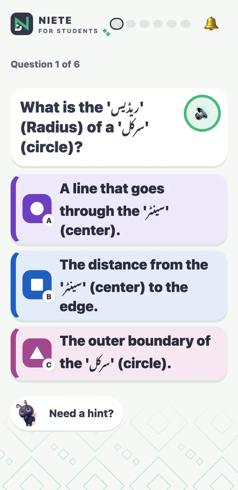
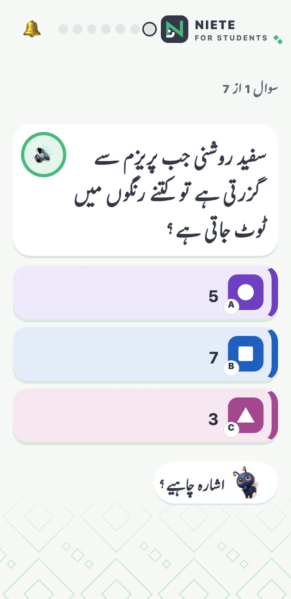
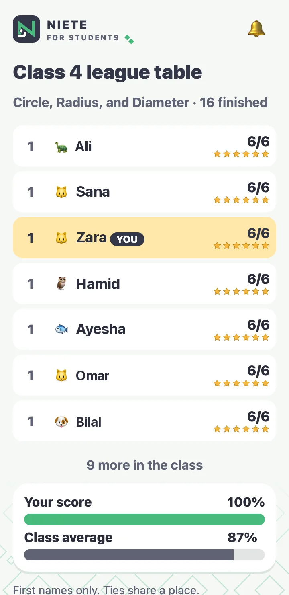
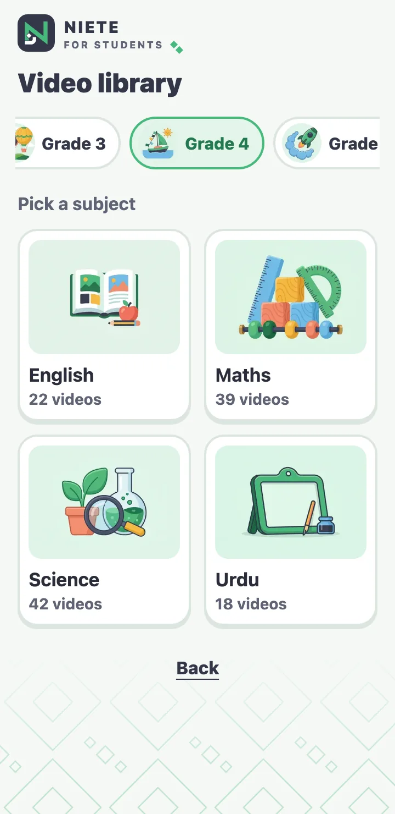
Children have played Rumi’s quizzes in six regions: on NIETE’s own WhatsApp number in Islamabad since 6 September, and on Rumi’s number in Rawalpindi (Punjab), Moawin schools (Punjab and Gilgit-Baltistan), Punjab (joined through Taleemabad), Sindh and Kenya. The first table counts every region the way this page’s own header counts Islamabad, from each region’s first quiz in any form, in the chat or on the web page, to 23:59 on 29 October.
| Since each region’s first quiz, to 23:59 on 29 October | Children who started a quiz | Teachers with a class link | Quizzes started | Children who finished one |
|---|---|---|---|---|
| IslamabadNIETE · since 6 September | 22,0469,419 chat · 12,627 page | 2,040 | 80,73050,592 chat · 30,138 page | 18,63985% of the children |
| RawalpindiPunjab · since 30 July | 977653 chat · 324 page | 275 | 2,4652,083 chat · 382 page | 69471% of the children |
| Moawin schoolsPunjab and Gilgit-Baltistan · since 28 July | 294285 chat · 9 page | 206 | 1,6611,595 chat · 66 page | 21774% of the children |
| Punjabjoined through Taleemabad · since 30 July | 369229 chat · 140 page | 112 | 786640 chat · 146 page | 25770% of the children |
| Sindhsince 1 May | 184chat only | 43 | 294chat only | 11361% of the children |
| Kenyasince 28 October | <5page only | 2 | 2page only | <5 |
| All six regions | 23,872 | 2,678 | 85,938 | 19,921 |
How the first table counts: a child who started a quiz is one family phone in the chat or one record on the web page, so a child on both the chat and the page is two children here, as in the header. Teachers with a class link got at least one link for a quiz (a lesson quiz, a video quiz or a quiz from the curriculum), to send to their class. Quizzes started are chat sittings plus page sittings. A child who finished one answered every question of at least one quiz. In the total row each region’s children are added up. Islamabad’s row is the header’s own numbers: the build checks them against it every night. Not live yet: Tanzania, Yemen and Palestine. To 23:59 on 29 October, no child there outside our own test accounts had played a quiz, in the chat or on the page.
Every kind of quiz counts: the quiz from the lesson a teacher has just taught, a lesson-plan quiz, a video’s quiz and a quiz a teacher made. This table splits each region’s quizzes started by kind, and by the chat and the page.
| Quizzes started, by kind of quiz | Quiz from the lesson just taught | Video quiz | Lesson-plan quiz | Storybook quiz | Quiz a teacher made | Quiz from the curriculum |
|---|---|---|---|---|---|---|
| IslamabadNIETE · since 6 September | 49,17934,321 chat · 14,858 page | 18,25710,941 chat · 7,316 page | 13,0525,330 chat · 7,722 page | 2420 chat · 242 page | – | – |
| RawalpindiPunjab · since 30 July | 3820 chat · 382 page | 2,0132,013 chat · 0 page | 77 chat · 0 page | – | 6363 chat · 0 page | – |
| Moawin schoolsPunjab and Gilgit-Baltistan · since 28 July | 660 chat · 66 page | 1,4151,415 chat · 0 page | 121121 chat · 0 page | – | 5959 chat · 0 page | – |
| Punjabjoined through Taleemabad · since 30 July | 1460 chat · 146 page | 637637 chat · 0 page | – | – | 33 chat · 0 page | – |
| Sindhsince 1 May | – | 4444 chat · 0 page | 5151 chat · 0 page | – | 199199 chat · 0 page | – |
| Kenyasince 28 October | – | – | – | – | – | 20 chat · 2 page |
| Quiz offers, counted in quizzes | Offers | Yeses | Delivered | Opened by a child |
|---|---|---|---|---|
| IslamabadNIETE · since 6 September | 25,902 | 5,836 | 5,299 | 3,040 |
| RawalpindiPunjab · since 30 July | 421 | 147 | 129 | 55 |
| Moawin schoolsPunjab and Gilgit-Baltistan · since 28 July | 197 | 98 | 90 | 49 |
| Punjabjoined through Taleemabad · since 30 July | 112 | 45 | 40 | 14 |
| Sindhsince 1 May | 3 | 1 | 1 | 0 |
Offers are counted in quizzes: the quiz Rumi offers a teacher after a coaching report (and, in Islamabad, with a lesson plan); a yes is the teacher accepting it; delivered means its class link reached the teacher; opened means a child started it.
The quiz written from the lesson a teacher has just taught, opened from one link in the class group, runs on the web page in five regions: in Islamabad since 6 September (on the page since 7 October), and on Rumi’s number in Rawalpindi (Punjab), Moawin schools (Punjab and Gilgit-Baltistan), Punjab (joined through Taleemabad) and Sindh. These tables count the web page alone, from each region’s first quiz from a lesson to 23:59 on 29 October.
| To 23:59 on 29 October | Teachers who sent a link | Class links | Children | Quizzes started | Finished |
|---|---|---|---|---|---|
| IslamabadNIETE · since 6 September | 878 | 2,190 | 12,627 | 30,138 | 71% |
| RawalpindiPunjab · since 28 Oct | 129 | 132 | 324 | 382 | 79% |
| Moawin schoolsPunjab and Gilgit-Baltistan · since 16 Oct | 92 | 92 | 9 | 66 | 88% |
| Punjabjoined through Taleemabad · since 28 Oct | 41 | 41 | 140 | 146 | 81% |
| Sindhsince 23 Oct | 2 | 3 | 0 | 0 | – |
| All five regions | 1,142 | 2,458 | 13,100 | 30,732 | 71% |
| The last 7 days | Class links | Children | Quizzes started |
|---|---|---|---|
| IslamabadNIETE · since 6 September | 769 | 3,722 | 8,379 |
| RawalpindiPunjab · since 28 Oct | 132 | 324 | 382 |
| Moawin schoolsPunjab and Gilgit-Baltistan · since 16 Oct | 27 | 9 | 19 |
| Punjabjoined through Taleemabad · since 28 Oct | 41 | 140 | 146 |
| Sindhsince 23 Oct | 3 | 0 | 0 |
| The last 30 days | Class links | Children | Quizzes started |
|---|---|---|---|
| IslamabadNIETE · since 6 September | 2,190 | 12,627 | 30,138 |
| RawalpindiPunjab · since 28 Oct | 132 | 324 | 382 |
| Moawin schoolsPunjab and Gilgit-Baltistan · since 16 Oct | 92 | 9 | 66 |
| Punjabjoined through Taleemabad · since 28 Oct | 41 | 140 | 146 |
| Sindhsince 23 Oct | 3 | 0 | 0 |
In Kenya the quiz page is live with quizzes from the curriculum, not yet from a lesson just taught: 2 class links, fewer than 5 children and 2 quizzes started, so it is not in the table. Not live yet: Tanzania, Yemen and Palestine. To 23:59 on 29 October, no teacher there outside our own test accounts had been sent a quiz from a lesson, and no child there had played one on the page.
Everything from “Why it moved” to “The same quiz again” is Islamabad (NIETE). Each other region has its own section after it: Rawalpindi (Punjab), Moawin schools (Punjab and Gilgit-Baltistan), Punjab (joined through Taleemabad), Sindh and Kenya.
22,046 children have started a quiz since 6 September2,040 teachers have got a class link for a quiz 491 children have played Jugnu’s Challenge since it openedData to 29 October 2026, 23:59 Pakistan time (18:59 UTC)
| Quizzes started, by kind of quiz | In the chat | On the page | All |
|---|---|---|---|
| Quiz from the lesson just taughtsince 7 September | 34,321 | 14,858 | 49,179 |
| Video quizsince 6 September | 10,941 | 7,316 | 18,257 |
| Lesson-plan quizsince 25 September | 5,330 | 7,722 | 13,052 |
| Storybook quizsince 24 October | 0 | 242 | 242 |
| All quizzes | 50,592 | 30,138 | 80,730 |
The quiz first ran inside the WhatsApp chat. A question was a message, every answer was a reply, and the feedback, the scorecard and the offers after it were more messages: about 46 for one finished quiz. Through September that cost nothing: replies a business sends inside a conversation the person has started were free.
On 1 October that changed. Meta now gives each number 1,000 free replies a month and charges for the rest; in Pakistan it is US$0.015 a message. A number like NIETE’s uses the free thousand within the first day of the month. At that rate the chat quiz costs about 67 cents for every finished quiz.
A quiz does not need the chat: the same link opens a web page in one tap. So the link still travels the way it always did, from teacher to class group to a family phone, and everything after the tap happens in a page that sends no messages. All in, a finished quiz on the page costs two to four cents; the recorded voices and the one message that carries the link are nine-tenths of that.
Until 6 October
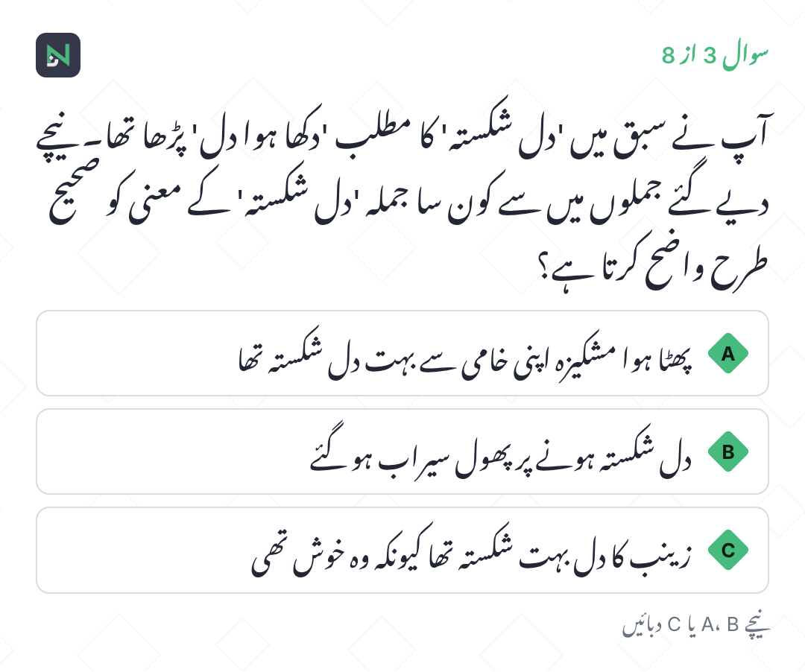
سوال اوپر تصویر میں ہے۔ A، B یا C دبائیں۔
2:23 pmB
2:23 pm ✓✓✅ بہت خوب! اس جملے میں 'دل شکستہ' کا مطلب 'دکھا ہوا دل' صاف ظاہر ہو رہا ہے، جیسے مشکیزہ اپنی خامی کی وجہ سے اداس تھا۔
2:23 pmFrom 7 October
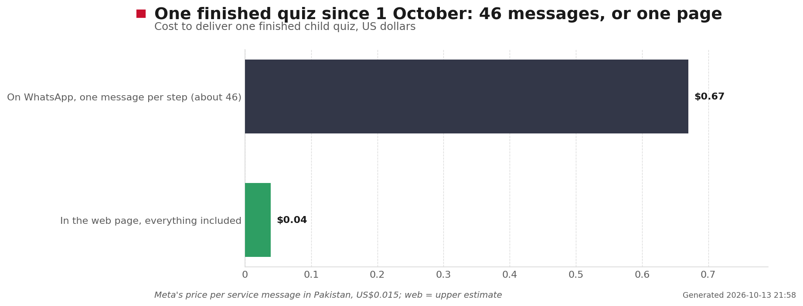
Saving the messages was the reason. What the page opened up is the rest of this story.
These are the real screens, taken on our test copy of the service. Every name on them is invented.
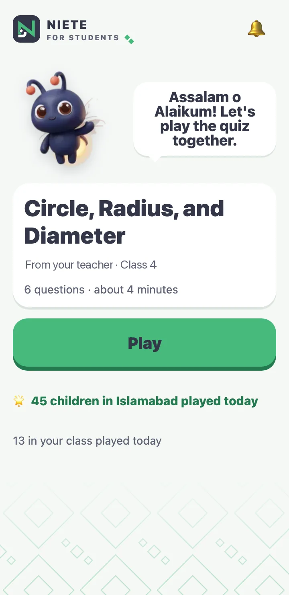
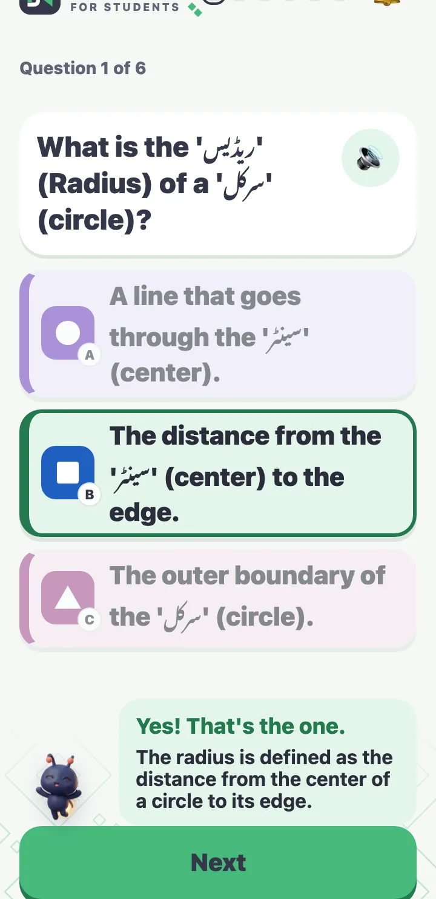
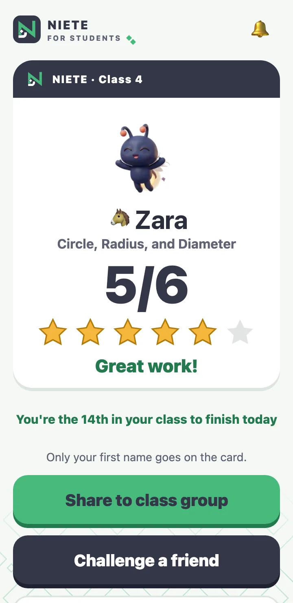
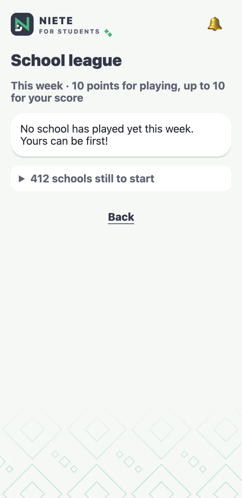
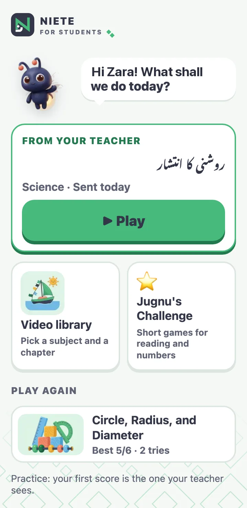
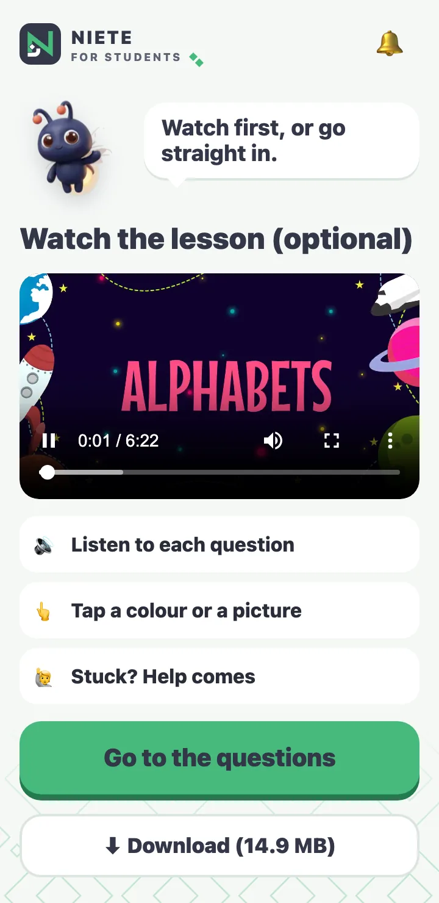
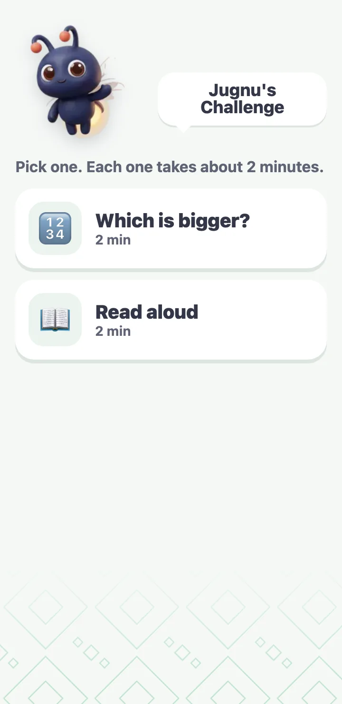
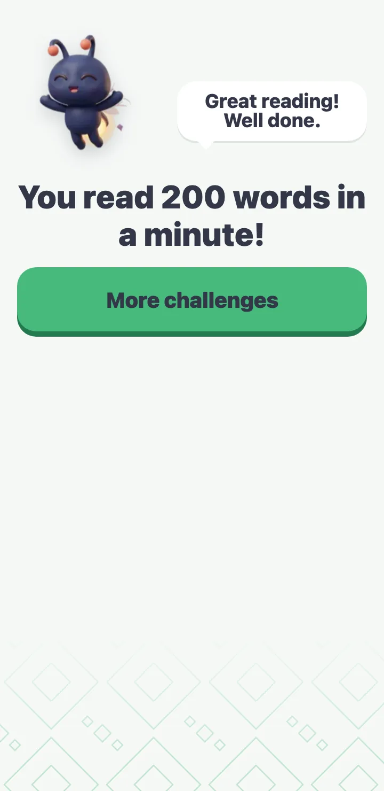
The page went live for every teacher at 03:08 on 7 October, Pakistan time. The numbers here run from then to 23:59 on 29 October and count real children only: the checks our own team ran on the live service are taken out. The service changed in its first two days, all times Pakistan time:
| Each day, Pakistan time (the last 7) | 23 Oct | 24 Oct | 25 Oct | 26 Oct | 27 Oct | 28 Oct | 29 Oct to 23:59 |
|---|---|---|---|---|---|---|---|
| Children on the page | 530 | 415 | 295 | 708 | 842 | 954 | 848 |
| Quizzes started on the page | 985 | 826 | 678 | 1,250 | 1,491 | 1,703 | 1,446 |
| … finished | 691 (70%) | 560 (68%) | 423 (62%) | 841 (67%) | 1,010 (68%) | 1,149 (67%) | 934 (65%) |
| Chat sittings on old links | 1 | 2 | 3 | 0 | 2 | 3 | 0 |
Links sent before the switch still open the old way, and those chat sittings are dwindling as the old links age. Since 22:03 on 7 October an old link answers with one button that opens the quiz on the page; the button has been sent 1,171 times by 23:59. 17,105 of the web sittings were in English and 13,033 in Urdu. 3,206 of the 12,627 children were matched to their class’s list, so their results land against the right name in the teacher’s register.
Of the 82,861 page opens, 2,773 were inside WhatsApp’s own browser, almost all from a button the bot sent; the rest opened in the phone’s own browser (Chrome on most phones), which is where a link forwarded in a class group opens. So for most children the quiz is one tap from WhatsApp, not inside it.
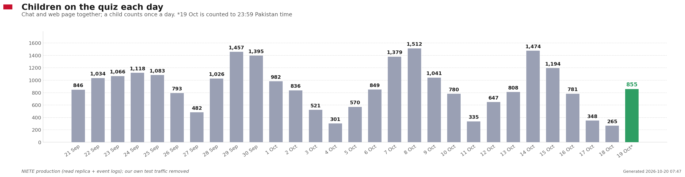
Since the library opened at 12:28 on 7 October, children have looked at 55,324 library screens, picked 5,777 videos, saved 2,051 to the phone and started 5,785 quizzes from a video they picked themselves.
Children tapped a share button 19,364 times: 11,533 from the scorecard, 3,508 to challenge a friend, 4,322 from the class league, the school league and Jugnu’s game cards, and 1 from Jugnu’s story cards; 6,120 of those shares went through. 807 friend challenges were shared, and 224 quizzes have been played through one. Since 19 October a share sent with the WhatsApp button of the new share card is recorded the same way as the tap that opened it, so it is counted as a tap, and the number that went through is a floor.
The hub opened 21,508 times; since the door on the scorecard went live at 19:38 on 7 October, children tapped it 1,509 times. The hub is also the way into Jugnu’s Challenge, next.
Jugnu’s Challenge is three short practice games for grades 2 to 5, reached from the hub: Which is bigger? (ten pairs of numbers), Read aloud (a passage read for one minute, words lighting up as the child reads, then questions on it) and Listen and answer (a story read to the child, then questions). The games opened at 12:39 on 7 October; the version described here, with the live reading, the questions and the listening game, went on at 19:38 that evening. The numbers here run from then, 19:38 on 7 Oct, to 23:59 on 29 October (Pakistan time): that first evening and 22 full days since. On 29 October alone, 118 children played and 0 games were finished.
Questions, after a reading and in the listening game together: 35 of 44 answers right (80%). After a reading: 249 of 285 right; in the listening game: 394 of 459 right.
Words correct per minute (WCPM), counted by the scorer from the recording: Urdu: 58 children, a median of 90 words correct a minute on their first reading (middle half 50–116); English: 78 children, a median of 50 words correct a minute on their first reading (middle half 0–88). The Urdu and English passages differ, so the two are never pooled.
“Started” counts each time a game was opened, so a child who opens a game twice counts twice and the finished share is a floor. A game was finished in 211 different hours on 23 days, Pakistan time. The microphone was allowed 25 times and refused or failed 8 times; the reason for a refusal is not recorded yet. Our own checks of the live games are taken out.
Where the drop happens: a child reaches the games through the scorecard’s door to the hub, then the games tile, and the games are for grades 2 to 5 only. Since the challenge went live, the hub was opened 21,502 times, the games menu 159 times, and 112 games were started. A WCPM from the page is practice, not an assessment: nobody checks who is reading, and a child can read the same passage again.
Each change, day by day, newest first, Pakistan time. “Live for children” means it is on the service children use and turned on.
From here the page covers the whole run, from the first quiz on 6 September to 23:59 on 29 October, chat and web page together. The earlier page, with how the chat quiz worked, mastery by objective and one child’s journey replayed, is kept here as it stood on 2 October.
This is the one place on the page for who is new and who came back. The definitions:
| Week | Active | New | Back | New share |
|---|---|---|---|---|
| 6–13 Sep | 672 | 646 | 26 | 96% new |
| 14–20 Sep | 582 | 327 | 255 | 56% new |
| 21–27 Sep | 704 | 360 | 344 | 51% new |
| 28 Sep – 4 Oct | 722 | 315 | 407 | 44% new |
| 5–11 Oct | 444 | 126 | 318 | 28% new |
| 12–18 Oct | 337 | 72 | 265 | 21% new |
| 19–25 Oct | 320 | 59 | 261 | 18% new |
| 26–29 Oct (so far) | 363 | 94 | 269 | 26% new |
| Web days, 7–29 Oct | 878 | 305 | 573 | 35% new |
| 29 Oct, to 23:59 | 122 | 26 | 96 | 21% new |
| Week | Active | New | Back | New share |
|---|---|---|---|---|
| 6–13 Sep | 2,874 | 2,732 | 142 | 95% new |
| 14–20 Sep | 3,465 | 2,108 | 1,357 | 61% new |
| 21–27 Sep | 4,105 | 2,180 | 1,925 | 53% new |
| 28 Sep – 4 Oct | 4,005 | 1,804 | 2,201 | 45% new |
| 5–11 Oct | 5,642 | 4,521 | 1,121 | 80% new |
| 12–18 Oct | 4,567 | 3,989 | 578 | 87% new |
| 19–25 Oct | 3,798 | 2,681 | 1,117 | 71% new |
| 26–29 Oct (so far) | 2,831 | 1,817 | 1,014 | 64% new |
| Web days, 7–29 Oct | 13,033 | 12,721 | 312 | 98% new |
| 29 Oct, to 23:59 | 848 | 437 | 411 | 52% new |
Among teachers, the share sending a quiz for the first time has fallen overall, from 96% in the first week; returning teachers first outnumbered new ones in the week of 28 Sep – 4 Oct (56% returning), and 74% in 26–29 Oct (so far). In the web days, 65% of the 878 teachers whose class link went out had sent one before.
Children are where the switch blurs the count. A child on the chat is known by the family phone; a child on the web page is known by the page’s own record, made the first time they say who is playing. The two cannot yet be joined, so a child who played in September and now plays on the page counts as new. Of the 13,033 children since 7 October, 12,627 are page records and 3,204 of those played on the page on more than one day. A separate check that matched page children to chat children under the same teacher found 14–24% of page children had played on the chat before, so the true “new” share of children since 7 October is lower than the table shows. Until the two records can be joined, the weeks before 7 October are the clean read.
These are weekly retention curves, and the tables behind them. Weeks run Monday to Sunday, Pakistan time. Everyone starts in week 0, the week of their first quiz, so every line and every row begins at 100%. Each later point is the share of that group who came back at least once in that week. People are split by era: the WhatsApp quiz until 6 October, and the web quiz page from 7 October. Only finished weeks are drawn, so no number moves once it is on a chart; the week now running ends on Sunday 1 Nov.
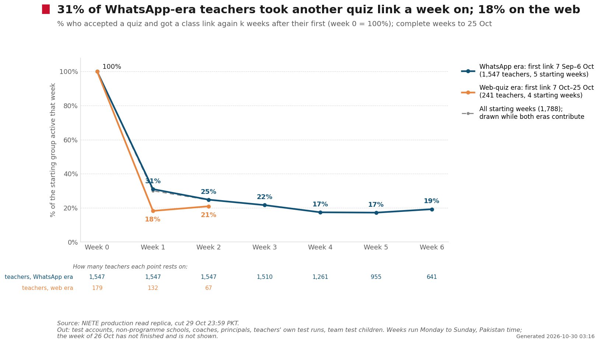
1,547 teachers took their first quiz link in the WhatsApp era, from 7 September, and 241 since the web quiz page opened. 31% of the WhatsApp-era teachers took another link the week after their first, against 18% of the web-era teachers. By week 4, 17% of WhatsApp-era teachers were still taking a link that week; no web-era group has reached week 4 yet. The number under each point is how many teachers it rests on; the web line rests on far fewer, so it moves more from week to week. The gap is not a clean measure of the web page alone: teachers who started in October came later to the quiz than September’s, and quiz offers to teachers fell from about 1,360 a week in September to 535 in the week of 19 Oct.
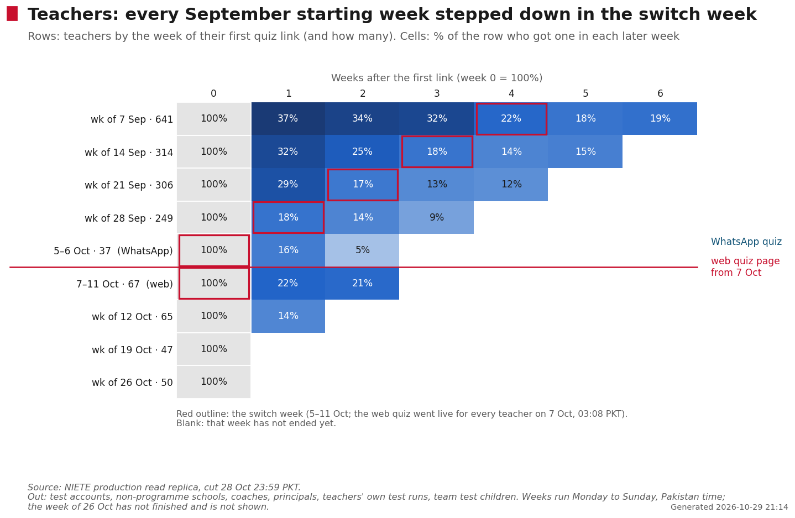
Each row is one starting week. The red outline marks the week the quiz moved to the web page, 5–11 October. Every September starting week dropped in that week.
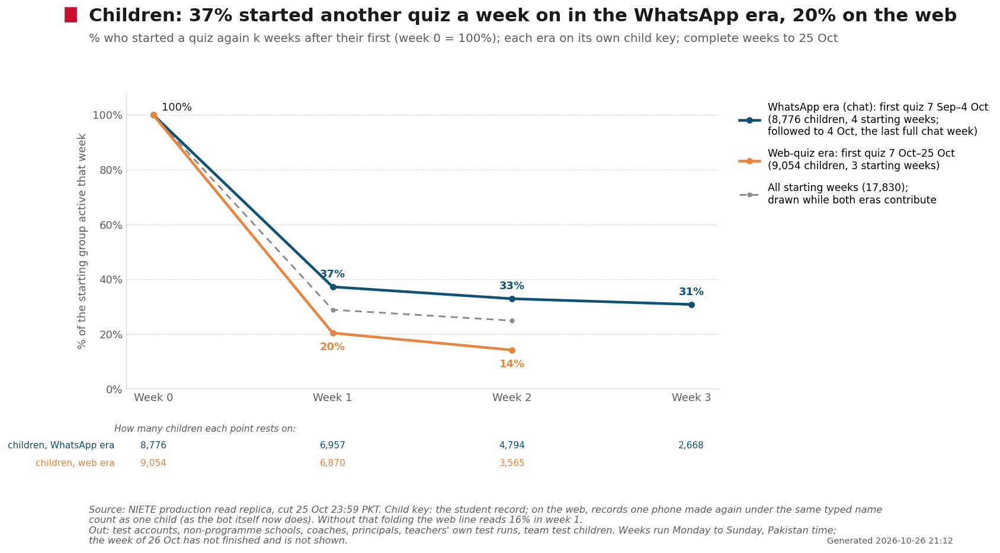
37% of WhatsApp-era children started another quiz the week after their first, against 20% on the web quiz page. Week 4 cannot be measured for WhatsApp-era children: the chat quiz closed before the oldest September group reached it, and a child who moved to the web page started a new record there.
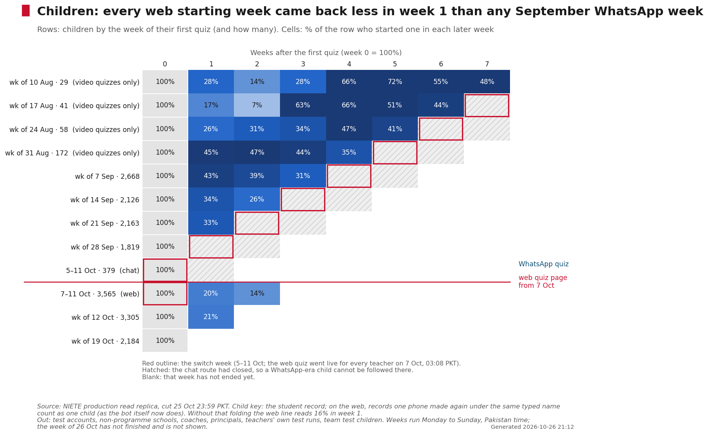
The four August rows are children who played the video-library quizzes before the lesson quiz began on 7 September. Hatched cells are weeks after the chat quiz closed. Data to 25 Oct.
Two funnels, because they count different things: the first counts teachers, the second children. Each bar shows how many got that far, from 6 September to 23:59 on 29 October, and the share of the step before that went on.
How each step is counted: offered = the quiz offer after a coaching report, or the lesson-plan quiz offer, was sent to the teacher; said yes = the teacher accepted that offer; got the quiz = the quiz was written and its class link sent to the teacher; a child opened it = a child started that quiz. Counted in quizzes instead: 25,902 offers (18,143 after coaching, 7,759 with a lesson plan), 5,836 yeses, 5,299 quizzes delivered and 3,040 opened by a child. A quiz a teacher asks for through /quiz, without an offer, is not in this funnel. What it cannot see: whether a teacher forwarded the link; a quiz forwarded but never tapped looks the same as one never forwarded. “Opened” is a floor.
What it cannot see: a child on both the chat and the page is two children here. A video watched without its quiz is not counted (the page records the tap, not who tapped).
Sharing is counted on the web page only, from 03:08 on 7 October: the chat quiz had no share step that could be counted, so these steps are not a share of the 22,046 children above. A share is not tied to the child who made it, so the steps count taps, shares, links and friends.
The class-group share on the same scorecard: 11,533 taps, of which 4,550 went through. It cannot be followed to who opened it, so it has no further steps. Since 19 October a share sent with the WhatsApp button of the new share card is recorded the same way as the tap that opened it, so it is counted as a tap, and the number that went through is a floor.
Corrected on 9 October: three figures on this page counted the wrong thing. “Challenged a friend” had counted the challenge code made at every finished quiz (5,241); it now counts challenges a child actually shared. Opens inside WhatsApp’s browser had been read from data that lost the browser on most rows (59 of 3,722); it now covers every page open. Share taps had counted a tap and its outcome as two (5,906); each tap now counts once.
Since the first quiz went out on 6 September, 22,046 children have started at least one quiz, from the classes of 2,040 teachers who got a class link for at least one quiz. Who is new and who came back is in “New and returning” above; this section is about where they are.
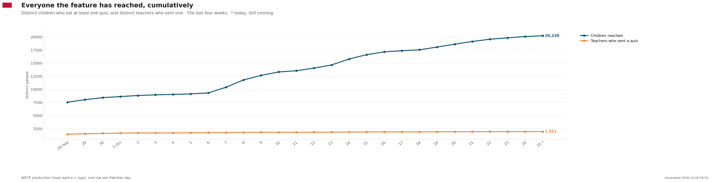
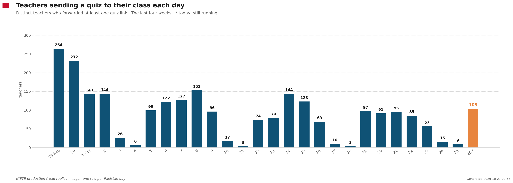
Every teacher belongs to a school, and every ICT school to one of six sectors, so both the teachers and the children can be placed. Across the six, 27.0% of the 6,807 teachers on the roll have had a class link for at least one quiz, from 330 of the 433 schools. Sihala leads on penetration (34.5% of its teachers); Urban-I carries the most children (10,902) because it is the biggest sector. Mastery barely moves between them — Sihala at 73.3%, Urban-II at 67.8% — which is the point: the quiz is written from the lesson, and the lessons are the same curriculum everywhere.
The map also opens on its own page. Press Play the rollout to watch it spread day by day from 6 September, or keep the film: light · dark.
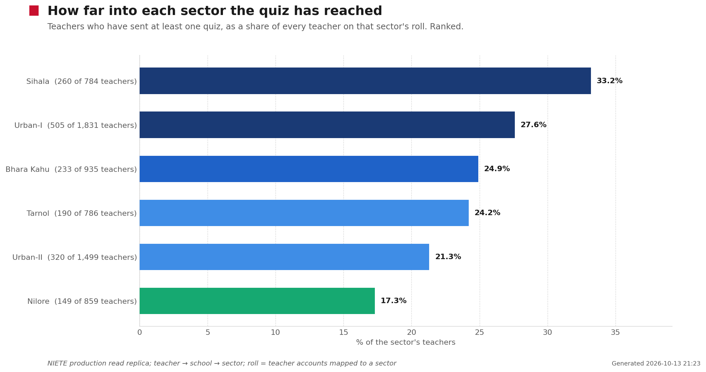
| Sector, ranked | Penetration | Teachers with a class link | Schools reached | Children | Quizzes finished | Objectives mastered |
|---|---|---|---|---|---|---|
| 1. Sihala | 34.5% | 281 of 815 | 64 of 79 | 2,502 | 6,291 | 73.3% |
| 2. Urban-I | 29.9% | 545 of 1,822 | 52 of 74 | 10,902 | 28,345 | 73.1% |
| 3. Bhara Kahu | 28.1% | 265 of 943 | 66 of 85 | 1,191 | 2,622 | 71.7% |
| 4. Tarnol | 25.6% | 218 of 852 | 50 of 61 | 1,354 | 3,184 | 69.4% |
| 5. Urban-II | 22.7% | 344 of 1,514 | 46 of 67 | 4,525 | 9,197 | 67.8% |
| 6. Nilore | 21.1% | 182 of 861 | 52 of 67 | 963 | 2,027 | 68.9% |
| All six sectors | 27.0% | 1,835 of 6,807 | 330 of 433 | 21,437 | 51,666 | |
| Not mapped to a sector | — | 205 | — | 1,012 | 1,790 | 69.9% |
The roll is every teacher account that maps to a sector through its school record — 6,807 teachers, in line with the ICT sheet. 1,835 of the 2,040 teachers with a class link map that way; the rest have no school on file. A child who sat quizzes from teachers in two sectors is counted in both, so the column can sum to slightly more than the distinct total above. A friend who arrived by another child's invite is placed with that child's teacher.
5,033 children have finished a quiz and then sat that same quiz again — 23% of everyone reached, across 12,193 repeat sittings. It happens every day, weekends included. The class report and the class card count each child once, using their latest attempt, so a child who repeats a quiz to improve is ranked on the result they ended with.
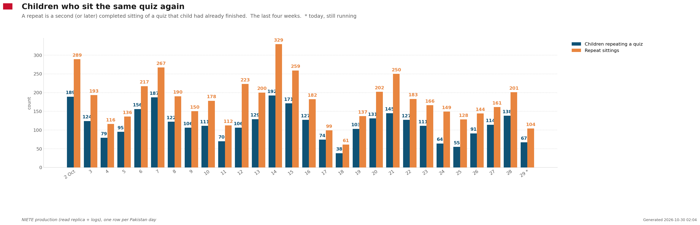
On Rumi’s WhatsApp number · quizzes since 30 July · data to 23:59 on 29 October
Since the first quiz here, on 30 July, counted the way the header counts Islamabad. In the chat: a video’s quiz since 30 July (2,013 sittings), a quiz a teacher made since 11 August (63 sittings) and a lesson-plan quiz since 22 September (7 sittings). On the page since 28 October.
| Quizzes started, by kind of quiz | In the chat | On the page | All |
|---|---|---|---|
| Video quizsince 30 July | 2,013 | 0 | 2,013 |
| Quiz from the lesson just taughtsince 28 October | 0 | 382 | 382 |
| Quiz a teacher madesince 11 August | 63 | 0 | 63 |
| Lesson-plan quizsince 22 September | 7 | 0 | 7 |
| All quizzes | 2,083 | 382 | 2,465 |
Rumi has offered teachers here 424 quizzes written from a lesson they had just taught: 131 sent as a class link, 48 turned down, 236 not answered yet, 8 could not be made and 1 skipped. The quiz from the lesson began here on the web page, on 28 October: a class link opens it in one tap.
| Each day, Pakistan time | 28 Oct | 29 Oct to 23:59 |
|---|---|---|
| Children on the page | 205 | 125 |
| Quizzes started on the page | 235 | 147 |
| … finished | 191 (81%) | 111 (76%) |
The teachers who sent a link named 93 schools when they joined Rumi. On 11 of the 382 quizzes started the page recorded no child, so the children count is a floor. Not counted here yet: sectors and the school map, teachers on the roll, children matched to a class list, the library, sharing, the hub and Jugnu’s Challenge. In Islamabad those come from NIETE’s school list and the page’s event log; this region’s numbers come from the quiz records alone.
On Rumi’s WhatsApp number · quizzes since 28 July · data to 23:59 on 29 October
Since the first quiz here, on 28 July, counted the way the header counts Islamabad. In the chat: a video’s quiz since 28 July (1,415 sittings), a lesson-plan quiz since 18 August (121 sittings) and a quiz a teacher made since 28 August (59 sittings). On the page since 16 October.
| Quizzes started, by kind of quiz | In the chat | On the page | All |
|---|---|---|---|
| Video quizsince 28 July | 1,415 | 0 | 1,415 |
| Lesson-plan quizsince 18 August | 121 | 0 | 121 |
| Quiz from the lesson just taughtsince 16 October | 0 | 66 | 66 |
| Quiz a teacher madesince 28 August | 59 | 0 | 59 |
| All quizzes | 1,595 | 66 | 1,661 |
Rumi has offered teachers here 200 quizzes written from a lesson they had just taught: 91 sent as a class link, 17 turned down, 85 not answered yet, 5 could not be made, 1 skipped and 1 cancelled. The quiz from the lesson began here on the web page, on 16 October: a class link opens it in one tap.
| Each day, Pakistan time (the last 7) | 23 Oct | 24 Oct | 25 Oct | 26 Oct | 27 Oct | 28 Oct | 29 Oct to 23:59 |
|---|---|---|---|---|---|---|---|
| Children on the page | 0 | 0 | 0 | 0 | 0 | 6 | <5 |
| Quizzes started on the page | 2 | 4 | 0 | 3 | 1 | 6 | 3 |
| … finished | 2 (100%) | 4 (100%) | 0 (–) | 3 (100%) | 1 (100%) | 5 (83%) | 3 (100%) |
The teachers who sent a link named 74 schools when they joined Rumi. On 57 of the 66 quizzes started the page recorded no child, so the children count is a floor. Not counted here yet: sectors and the school map, teachers on the roll, children matched to a class list, the library, sharing, the hub and Jugnu’s Challenge. In Islamabad those come from NIETE’s school list and the page’s event log; this region’s numbers come from the quiz records alone.
On Rumi’s WhatsApp number · quizzes since 30 July · data to 23:59 on 29 October
Since the first quiz here, on 30 July, counted the way the header counts Islamabad. In the chat: a video’s quiz since 30 July (637 sittings) and a quiz a teacher made since 17 August (3 sittings). On the page since 28 October.
| Quizzes started, by kind of quiz | In the chat | On the page | All |
|---|---|---|---|
| Video quizsince 30 July | 637 | 0 | 637 |
| Quiz from the lesson just taughtsince 28 October | 0 | 146 | 146 |
| Quiz a teacher madesince 17 August | 3 | 0 | 3 |
| All quizzes | 640 | 146 | 786 |
Rumi has offered teachers here 113 quizzes written from a lesson they had just taught: 41 sent as a class link, 13 turned down, 57 not answered yet and 2 could not be made. The quiz from the lesson began here on the web page, on 28 October: a class link opens it in one tap.
| Each day, Pakistan time | 28 Oct | 29 Oct to 23:59 |
|---|---|---|
| Children on the page | 71 | 70 |
| Quizzes started on the page | 72 | 74 |
| … finished | 56 (78%) | 62 (84%) |
The teachers who sent a link named 32 schools when they joined Rumi. Not counted here yet: sectors and the school map, teachers on the roll, children matched to a class list, the library, sharing, the hub and Jugnu’s Challenge. In Islamabad those come from NIETE’s school list and the page’s event log; this region’s numbers come from the quiz records alone.
On Rumi’s WhatsApp number · quizzes since 1 May · data to 23:59 on 29 October
Since the first quiz here, on 1 May, counted the way the header counts Islamabad. In the chat: a lesson-plan quiz since 1 May (51 sittings), a quiz a teacher made since 1 May (199 sittings) and a video’s quiz since 28 July (44 sittings). The web page has not been used here yet.
| Quizzes started, by kind of quiz | In the chat | On the page | All |
|---|---|---|---|
| Quiz a teacher madesince 1 May | 199 | 0 | 199 |
| Lesson-plan quizsince 1 May | 51 | 0 | 51 |
| Video quizsince 28 July | 44 | 0 | 44 |
| All quizzes | 294 | 0 | 294 |
Rumi has offered teachers here 3 quizzes written from a lesson they had just taught: 1 sent as a class link, 1 turned down and 1 not answered yet. 3 class links went out for them; no child has opened one on the page yet.
On Rumi’s WhatsApp number · quizzes since 28 October · data to 23:59 on 29 October
Since the first quiz here, on 28 October, counted the way the header counts Islamabad. Nothing has run in the chat here. On the page since 28 October.
| Quizzes started, by kind of quiz | In the chat | On the page | All |
|---|---|---|---|
| Quiz from the curriculumsince 28 October | 0 | 2 | 2 |
| All quizzes | 0 | 2 | 2 |
Rumi has not yet offered teachers here a quiz written from a lesson they had just taught. The page here runs quizzes from the curriculum, since 28 October.
| Each day, Pakistan time | 28 Oct | 29 Oct to 23:59 |
|---|---|---|
| Children on the page | <5 | 0 |
| Quizzes started on the page | 2 | 0 |
| … finished | 1 (50%) | 0 (–) |
The teachers who sent a link named 2 schools when they joined Rumi. Not counted here yet: sectors and the school map, teachers on the roll, children matched to a class list, the library, sharing, the hub and Jugnu’s Challenge. In Islamabad those come from NIETE’s school list and the page’s event log; this region’s numbers come from the quiz records alone.